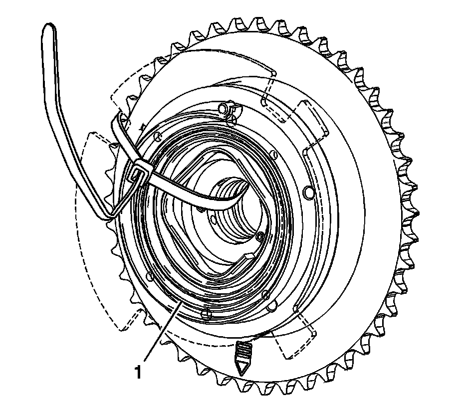
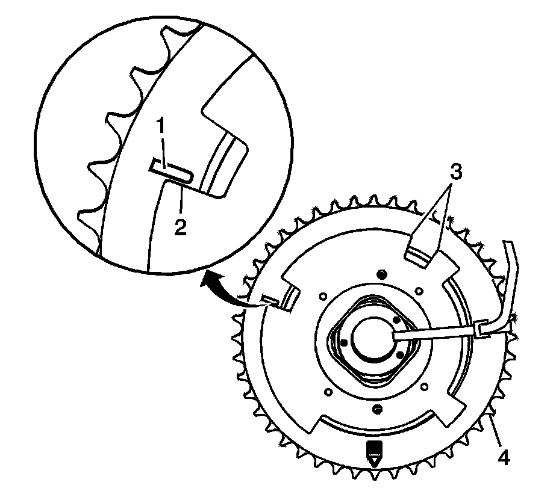
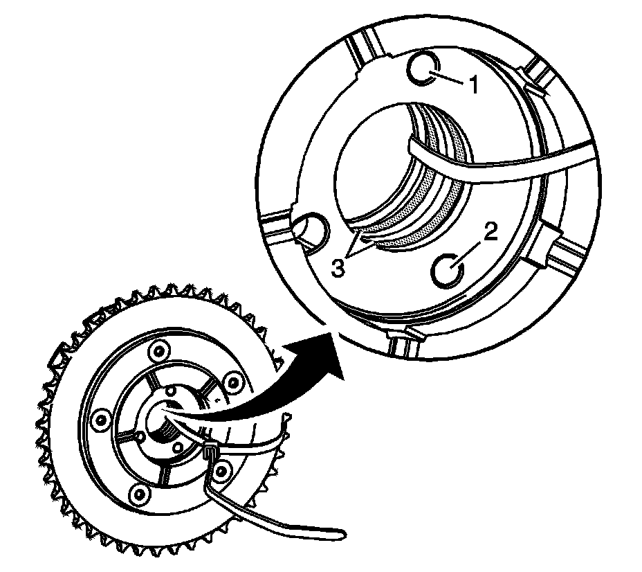
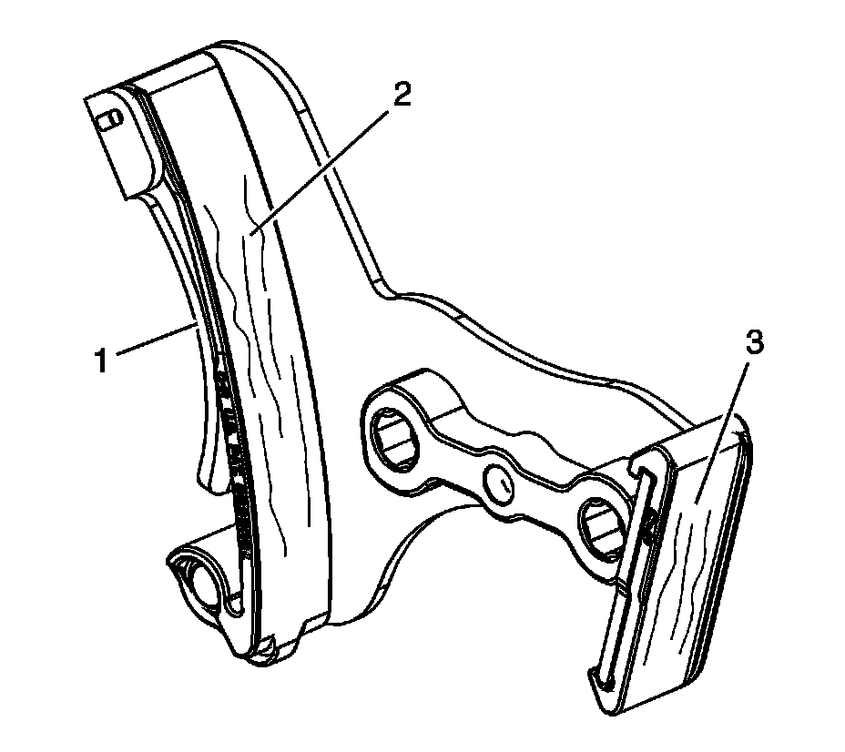

44. Camshaft Position Actuator Cleaning and Inspection
Camshaft Position Actuator Cleaning and Inspection
Caution: Refer to Camshaft Position Actuator Removal and Installation Caution.

1. Insert a tie strap (1) through the center of the camshaft position (CMP) actuator and over the reluctor wheel.

2. Clean the CMP actuator with cleaning solvent.
Caution: Refer to Safety Glasses and Compressed Air Caution.
3. Dry the components with compressed air.
4. Inspect the CMP actuator for a broken spring (1).

5. Inspect the CMP actuator for the following conditions:
^ Improper positioning of the CMP reluctor wheel. The actuator return spring should reposition the reluctor wheel to the PARK position. Inspect for proper alignment of the mark on the face of the sprocket (1) with the flat edge of the reluctor wheel (2). If the reluctor wheel is not properly positioned, the internal components of the actuator are sticking or the return spring is broken and the actuator should be replaced as an assembly.
^ Nicked or damaged edges (3) on the CMP reluctor wheel
^ Damaged timing chain teeth (4)

6. Inspect the CMP actuator for dirt, debris, or restrictions within the oil passages (1, 2, 3).

7. Inspect the timing chain tensioner for the following conditions:
^ Damaged or broken tension spring (1)
^ Excessive wear or scoring on the chain guide surfaces (2, 3)